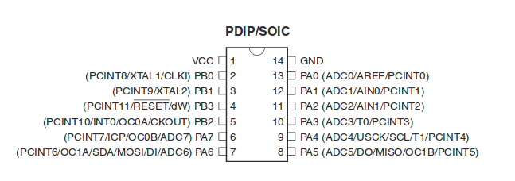
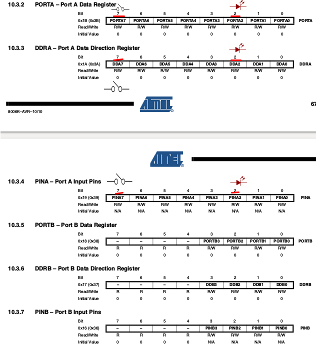
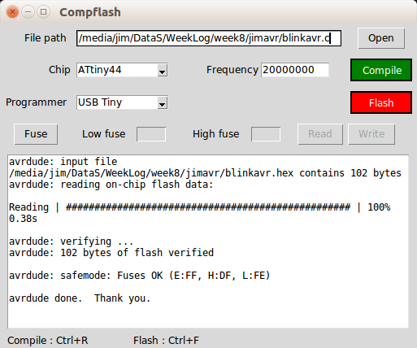
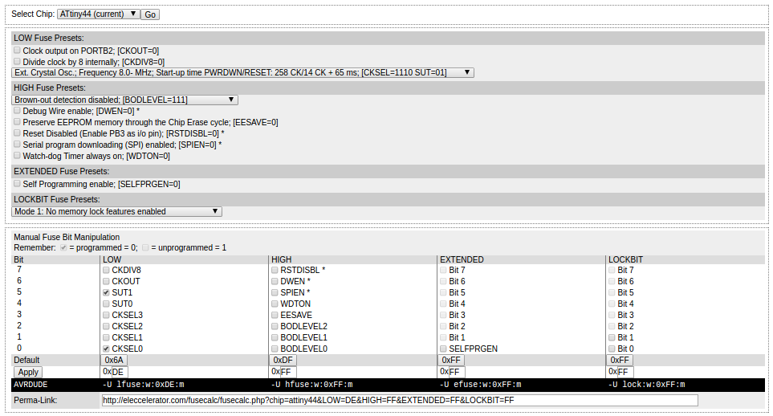
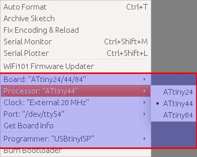
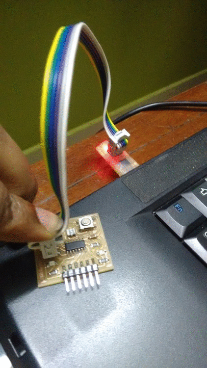

Embedded Programming
Here I am starting my baby steps on Embedded Programming. This week, I have done some basic programming on the board designed and made during the Electronic Design Week. An LED is used for Output and a switch is used as the Input for interacting with the ATTINY44 microprocesser used in the board.Datasheet of Attiny44
A datasheet, is a document that summarizes the performance and other technical characteristics of the microprocessor. This is the first time I am going through the datasheet, and to be frank I did not understood much. Later I understood that, these datasheets are something that should NOT be read as a Novel, instead should be used as a directory or catalogue to find the information we want. Anyway for the time being I was able to understand few specifications and importantly the pinouts.
There is also a more detailed pinout available here
{kind=link}
I was also able to understand some information on the various port details as mentioned.
Port B (PB3:PB0) is a 4-bit bi-directional and Port A (PA7:PA0)is a 8-bit bi-directional I/O ports with internal pull-up resistors (selected for each bit).

Programming my board
I have connected a blue LED to port PA2, and a swith on PA7 on my board created during the electronics design week. I have tried programming using AVR-C and also using the Adruino IDE. And being a newbie, I found that the learning curve for Arduino IDE is steeper than for AVR-C.
Using AVR-C
In this week, I have used Atom to write and edit my C code, and used the Compflash GUI developed Yadu for compiling and Flashing. (Compflash is a gui for avr-gcc and avrdude written in python2.7 and could be found github/yadusharon/compflash). I am using the USBTiny created during the electronics production week as my ISP.
Blinking the LED
#include <avr/io.h> // Importing the avr/io library (as stdio.h in the normal C)
#define F_CPU 20000000 //telling the frequency, here the 20Mhz of the Resonator
#include <util/delay.h> // Importing library for delay (For blinking LEDs we need delay)
int main(void)
{
DDRA = 0b00000100; //Set Pin PA2 on PORT A as output
while(1)
{
PORTA = PORTA | (0b00000100); //PA2 is 3 from left
_delay_ms(1000); // delay of 1 second
PORTA=(0x00); // Make all pins in port A low
_delay_ms(1000); // delay of 1 second
}
}
It took me really lot of effort to make this program work and on the understanding of the basics of the working of this program including the representation of ports etc. The details are entered as comments in the code above.
Using Compflash
After cloning compflash from github to a local folder in ubuntu, open a terminal on the Compflash folder and enter github/yadusharon/compflash). And then we can use the GUI as below.

Fuses - low DE , high - nochange
The low fuse is set as DE and the high one is not set. DE is set for using the external resonator and for disabling the division of clock by 8. These fuses are actually to be set by referring the datasheets, which I am yet to decipher. For the time being I am going ahead using the low fuse as DE, which is okay for typical applications. More details on finding the fuse values could be found on
ladyada/learn/avr/fuses
engbedded.com/fusecalc/
eleccelerator.com/fusecalc

Using Arduino IDE
I downloaded and installed Arduino IDE and then followed the steps here to install the ATTiny board. Its important to choose the external 20Mhz clock. The settings used for the board (under Menu>Tools> is available in the following image. 
I tried few programs on Arduino IDE as shown in the images below.



The Adruino sketches created this week is available here.
Conclusion
This week I've learned about the basics of the Atmel tiny series eepecially Attiny44 and the basics of AVR programming. I've tried few programs interacting with the switch and response via a LED. Being a newbie in Embedded Programming, I've found that Arduino is bit more easier to understand and use, and for basic programming needs the larger hex file from arduino may not be of an issue. So for the time being my aim is to stick on with the Arduino IDE.